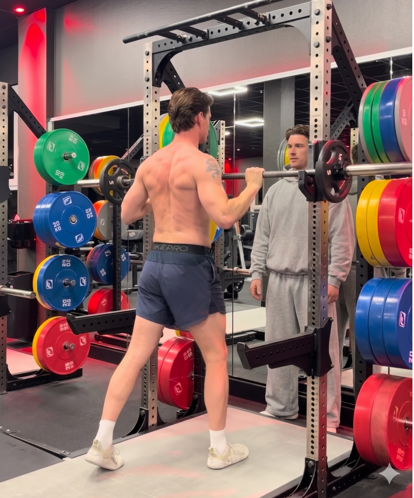
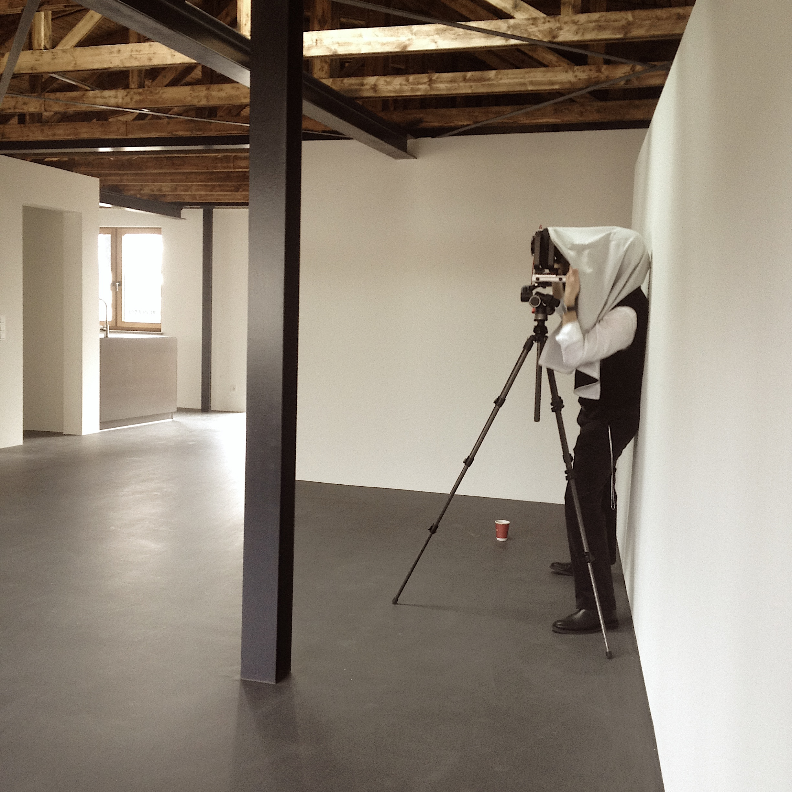

Auf der Suche nach Lösungen.
Wenn es einfach wäre, würde jeder Mensch mit einem Lächeln durchs Leben laufen. Wir wissen, dass in allen Themen so viele Fragen offen sind und Uneinigkeit herrscht. Was wir beherrschen können, ist hier notiert.



Bewegung
In Bewegung kommen
Körperliche Aktivität verbessert Stimmung, Kognition und Lebenserwartung nachweisbar. Wir schauen gemeinsam, was das konkret für deinen Alltag heißt.
Pedersen & Saltin, 2015, Exercise as medicine
Gruppe
Freunde an einem Ort für tägliche Bewegung versammeln
Soziale Einbindung ist einer der stärksten Motivatoren für Verhaltensänderung. Wohlwollendes Interesse füreinander passiert in echten Gruppen, nicht in Feeds.
Holt-Lunstad et al., 2015, Social relationships and health
Orientierung
Die eigene Position bestimmen
Wer versteht, wo er steht, im Leben, im Körper, im Raum, kann entspannter planen. Kontextklarheit reduziert Entscheidungsstress nachweislich.
Schwartz, 2004, The Paradox of Choice
Freiheit
Frei sein, nicht App-abhängig. Rituale ja, aber keine gelernten Dogmen
Starre Regeln, die aus Schuldgefühlen oder zwanghaftem Handeln entstehen, können Dich blockieren. Dopamin-Trigger bewusst für gute Dinge zu setzen ist etwas anderes als Selbstoptimierungsdruck.
Hayes et al., 2006, Acceptance and Commitment Therapy
Aufräumen
In den fünf Säulen aufräumen und das Leben nicht mit 1000 Dingen aufladen
Bewegung, Nahrung, Erholung, Soziales, Mentales. Nicht alles auf einmal optimieren. Erstmal verstehen, was für einen selbst wirklich gilt.
Kahneman, 2011, Thinking, Fast and Slow
Historie
Interesse an Geschichte, damit man nicht überrascht wird
Wer historische Muster kennt, persönlich wie gesellschaftlich, kann einordnen statt zu reagieren. Das macht ruhiger.
Harari, 2011, Sapiens
Ziel
Resilienz & Ambitionen & eine gute Zeit
Resilienz nach ACT heißt nicht Stärke zeigen, sondern mit Unsicherheit handlungsfähig bleiben. Ambitionen die wirklich die eigenen sind, nicht übernommene.
Hayes, 2019, A Liberated Mind
Friday Circle
Warum der Name FRIDAY CIRCLE?
„It's Friday." Wir glauben an den Wochenzyklus und diese bewusst gesetzten Momente, an Routinen die einem gut tun, an Momente des Flows, des Trainings, des Kreativen, des Durchboxen und der Ausgelassenheit. Wir suchen nach mehr Momenten außerhalb von Apps.